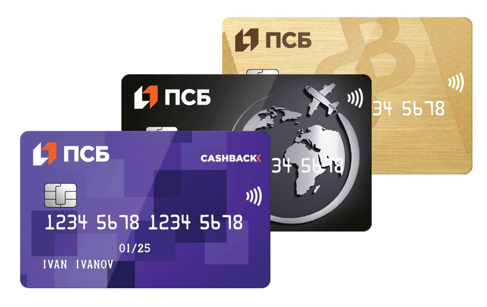

ПАО «Промсвязьбанк» (ПСБ) — российский банк, основанный в 1995 году.
Штаб-квартира — в Москве. ПСБ входит в составляемый Банком России перечень системно значимых кредитных организаций, а также в первую пятерку крупнейших банков страны по объёму активов. С 2018 года ПСБ является опорным банком для осуществления операций по государственному оборонному заказу и крупным государственным контрактам.
Новая история
В 2019 году ПСБ приступил к реализации задач в рамках национальных проектов «Малое и среднее предпринимательство и поддержка индивидуальной предпринимательской инициативы», «Здравоохранение», «Цифровая экономика Российской Федерации» и «Демография». В мае 2020 года Промсвязьбанк завершил процесс присоединения Связь-банка и его активы выросли более чем на 200 млрд рублей. Весной 2021 года к Промсвязьбанку был присоединён Роскосмосбанк, обслуживающий 120 компаний, входящих в состав Роскосмоса, и около 200 тыс. сотрудников этой госкорпорации. В 2021 году Правительство Российской Федерации планировало докапитализировать Промсвязьбанк в 2022 году на 13 млрд 731 млн рублей из бюджетных средств. В 2020 году банку уже была оказана господдержка в 25 млрд рублей. В феврале 2022 года Промсвязьбанк купил НПФ «Гефест» у владельца Объединённой металлургической компании Анатолия Седых.Инновационные продукты
В апреле 2021 года ПСБ запустил пилот сервиса «Катюша. Бизнес-ассистент ПСБ» — чат-банк для бизнеса на платформе мессенджера Telegram, созданный на основе нейронных сетей и машинного обучения, который консультирует клиентов-предпринимателей по продуктам и услугам банка, формирует выписку за нужный период и направляет остатки по счёту без обращения в колл-центр банка.
Факты
Крупный универсальный банк с развитой сетью подразделений. С марта 2018 года владельцем почти 100% акций Промсвязьбанка выступало АСВ. В мае 2018 года почти 100% акций банка были переданы в государственную казну. С конца 2019 года Промсвязьбанк официально является опорным банком оборонно-промышленного комплекса России.
Банк учрежден в 1995 году по инициативе организации «Московский междугородный и международный телефон». В июле 2001 года банк преобразован в закрытое акционерное общество, в августе 2007 года — в открытое акционерное общество. Основными владельцами Промсвязьбанка до 2018 года являлись братья Алексей и Дмитрий Ананьевы, контролировавшие в равных долях 50,03% акций через «Промсвязь Капитал Б. В.».
В марте 2018 года президент Путин подписал закон о схеме передачи Промсвязьбанка Росимуществу. Документ предоставил правительству право принять в казну акции
Промсвязьбанка от АСВ за счет уменьшения имущественного взноса России в агентстве на сумму до 150 млрд рублей. Предполагалось, что АСВ выкупит акции Промсвязьбанка на эту сумму за счет облигаций федерального займа, предоставленных ранее в рамках программы докапитализации. В конце марта АСВ выкупило допэмиссию акций Промсвязьбанка, докапитализировав его на 113,4 млрд рублей и став таким образом владельцем 99,99% акций банка.
В декабре 2019 года Путин подписал федеральный закон о наделении Промсвязьбанка статусом опорного банка ОПК. К этому моменту банк уже обслуживал более 80% предприятий и компаний сектора ОПК и более 50% от общего объема гособоронзаказа.
4 декабря 2020 года Промсвязьбанк сообщил о приобретении 100% акций Роскосмосбанка у государственной корпорации «Роскосмос», соответствующий договор был подписан сторонами. На первом этапе Роскосмосбанк продолжил функционировать как отдельный банк в составе финансовой группы Промсвязьбанка.
Владельцы: Российская Федерация в лице Федерального агентства по управлению государственным имуществом (Росимущество) — 100%.
Банк не раскрывает отчетность, поэтому достоверно проанализировать драйверы финансового результата нельзя, отметил управляющий директор по валидации рейтингового агентства «Эксперт РА» Юрий Беликов. К прибыли в первом квартале, как и у других банков, могла привести валютная переоценка, меньшие отчисления резервов и «кумулятивный процентный поток с продолжающего рост кредитного портфеля», отметил эксперт. В дальнейшем «динамика финансового результата» должна нормализоваться, а квартальная прибыль — снизиться в сравнении с началом года, полагает Беликов.